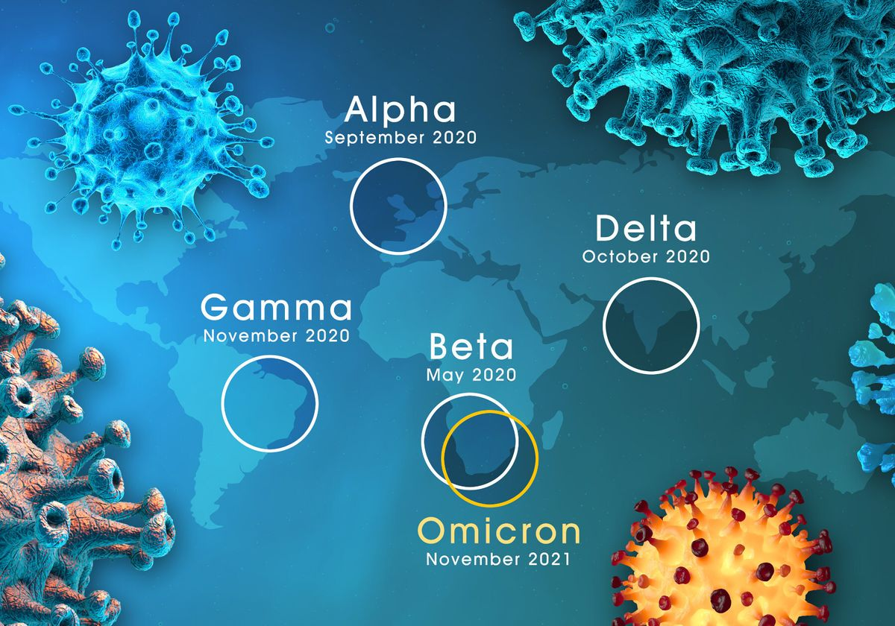
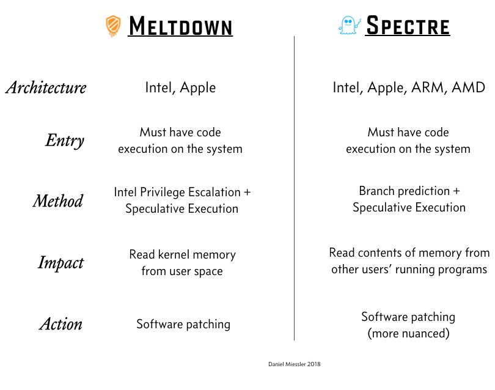
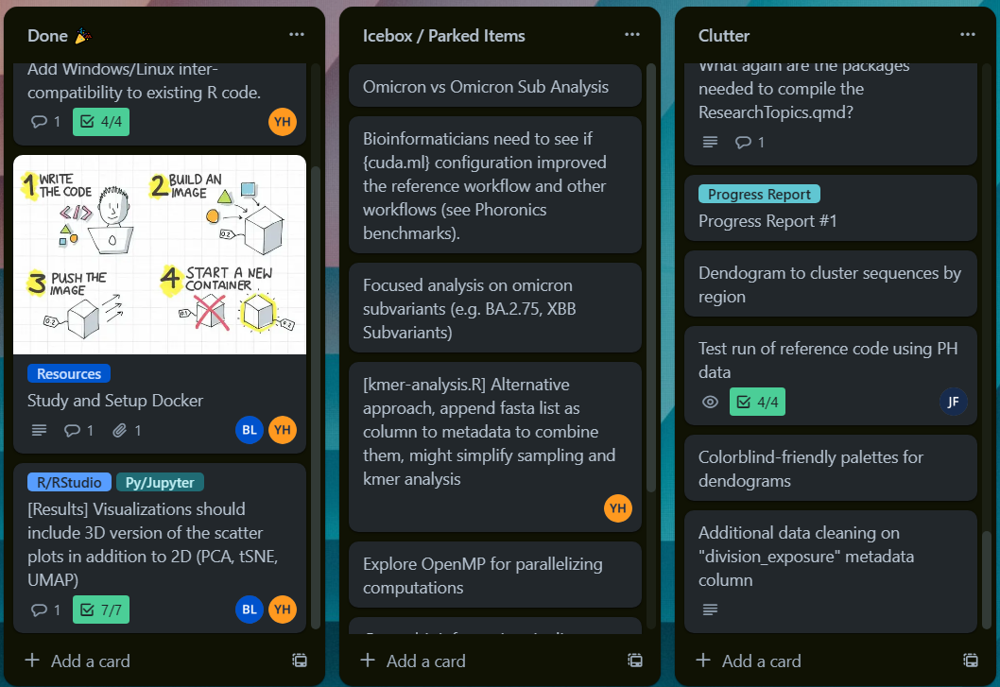
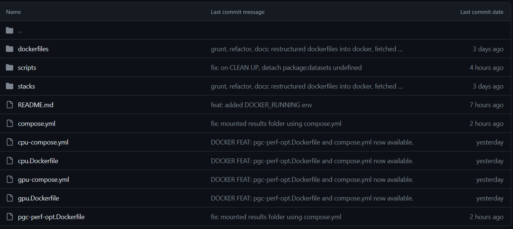
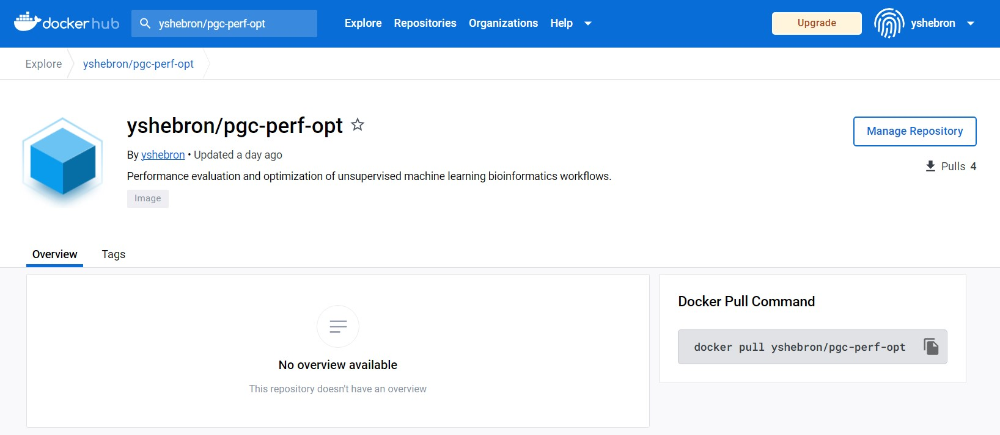

if(missing(filter1_factor) && missing(filter1_values) &&
missing(filter2_factor) && missing(filter2_values)){
} else if(missing(filter2_factor) && missing(filter2_values)){
df <- filter(df, df[[filter1_factor]] %in% filter1_values)
} else if(missing(filter1_factor) && missing(filter1_values)){
df <- filter(df, df[[filter2_factor]] %in% filter2_values)
} else {
df <- filter(df, df[[filter1_factor]] %in% filter1_values)
df <- filter(df, df[[filter2_factor]] %in% filter2_values)
}Research Updates 3
Project Lead: Mark Joseph Garrovillas, RCh
Interns: Brylle Joshua Logroño, John Matthew Felices, Yenzy Urson Hebron
Interns: Brylle Joshua Logroño, John Matthew Felices, Yenzy Urson Hebron
July 21, 2023
Performance Evaluation and Optimization of an Unsupervised Machine Learning Workflow for Discriminating Major COVID-19 Variants of Concern in the Philippines
Modification of the pipeline to better visualize different SARS-CoV-2 Variants in the PH

The sample pipeline discriminates between COVID19 variants using an unsupervised machine learning framework

Which linear algebra library implementation (BLAS,LAPACK,OpenCL,IntelMLK) gives the most optimal runtime for the workflow?

Does processor vulnerability mitigations (Spectre and Meltdown) significantly affect the runtime of the workflow?

Initial Treemaps to further motivate the Dataset Analysis
Initial Treemaps to further motivate the Dataset Analysis
Progress Report - Overview
The team’s trello board gives an overview of the team’s progress

The burndown chart shows if the team is on track to finish the project on time
The burndown chart shows if the team is on track to finish the project on time
Progress Report - Workflow Optimization
Data filtering by certain attributes (e.g. variant, region of exposure) was included into the workflow
Graph tooltips were improved to include relevant metadata
3D Plots were generated from PCA, tSNE, and UMAP analysis
Scree Plots, Loading Plots, and Vargraphs from PCA Analysis were generated
Scree Plots, Loading Plots, and Vargraphs from PCA Analysis were generated
Scree Plots, Loading Plots, and Vargraphs from PCA Analysis were generated
A pipeline file was created to compile all the functions into one R file
# File: pipeline.R
# Contains the complete bioinformatics pipeline
# for convenient runs and benchmarks.
# This will source functions from code/R/
# INSTALL AND LOAD PACKAGES ################################
options(repos = "https://cloud.r-project.org/")
# Installs pacman ("package manager") if needed
if (!require("pacman"))
install.packages("pacman")
library(pacman)
### ATTN: IN LINUX SYSTEMS, CONSULT README FOR ADDITIONAL PREREQUISITES
### BEFORE RUNNING ANY SCRIPT. ISSUE: tidyverse installation.
### This is a non-issue if code is ran within cpu.Dockerfile.
### This cannot be scripted because this requires sudo priveleges.
# Install xml2 in advance to prep for tidyverse installation in Linux.
# Note that in Windows RStudio, this is installed by default.
# If you're getting xml2 errors on Windows, you broke something lol.
if (pacman::p_detectOS() == "Linux" && !pacman::p_exists(xml2, local = TRUE)) {
install.packages("xml2", dependencies = TRUE, INSTALL_opts = c("--no-lock"))
pacman::p_load(xml2)
}
# Use pacman to load add-on packages as desired.
# TODO: Remove redundancies in dependencies. E.g., dplyr and ggplot2
# are already dependencies of tidyverse.
pacman::p_load(plyr, dplyr, GGally, ggplot2, ggthemes, ggvis,
httr, lubridate, plotly, psych,
rio, markdown, rmarkdown, shiny,
stringr, tidyr, tidyverse,
ape, kmer, readr, validate, gsubfn, seqinr,
umap, htmlwidgets, factoextra, scales,
Rtsne, tsne, RColorBrewer, ggfortify, devtools,
ggdendro, dendextend, cluster, colorspace,
microbenchmark,
highcharter)
install_github("vqv/ggbiplot", upgrade = FALSE, quiet = TRUE)
pacman::p_load(ggbiplot)
# validate used for %vin% operator
# gsubfn used to destructure more than one return value
# devtools supports install_github for installing ggbiplot
# Note: Divisive k-means clustering available via kmer::cluster
# LOAD SOURCES #############################################
source("code/R/helper.R")
source("code/R/preprocess.R")
source("code/R/kmer-analysis.R")
source("code/R/dim-reduce.R")
source("code/R/clustering-variant.R")
source("code/R/clustering-region.R")
# SET PARAMETERS ###########################################
# pipeline.R general parameters
seed <- 1234
stamp <- get_time()
kmer_list <- c(3, 5, 7)
# preprocess.R::preprocess() parameters
data_path_gisaid <- "data/GISAID"
extract_path <- "data/GISAID/datasets"
strat_size <- 100
country_exposure <- "Philippines"
write_fastacsv <- TRUE
# kmer-analysis.R::get_kmers() parameters
# dim-reduce.R::dim_reduce() parameters
data_path_kmers <- "data/kmers"
results_path_dimreduce <- "results/dim-reduce/R"
tsne_perplexity <- 40
tsne_max_iter <- 1000
tsne_initial_dims <- 50
umap_n_neighbors <- 15
umap_metric <- "euclidean"
umap_min_dist <- 0.1
target_col <- "variant"
# dim-reduce.R::dim_reduce() filtering parameters - OPTIONAL
factor1 <- "variant"
values1 <- c("Omicron", "Omicron Sub")
factor2 <- "year"
values2 <- c("2023")
# AGNES Clustering Parameters :: dendogram_create_x()
results_path_agnes <- "results/dendrogram"
# RUN PIPELINE #############################################
# Step 1: preprocess()
list[fasta_all, metadata_all] <- preprocess(data_path_gisaid, extract_path, seed,
strat_size, country_exposure,
write_fastacsv, stamp)
# Step 2: get_kmers()
for (k in kmer_list) {
get_kmers(fasta_all, metadata_all, k, stamp)
}
# Step 3: dim_reduce()
for (k in kmer_list) {
dim_reduce(k, data_path_kmers, results_path_dimreduce,
tsne_seed = seed, tsne_perplexity,
tsne_max_iter, tsne_initial_dims,
umap_seed = seed, umap_n_neighbors,
umap_metric, umap_min_dist, col_name = target_col,
filter1_factor = factor1, filter1_values = values1, # OPTIONAL
filter2_factor = factor2, filter2_values = values2) # OPTIONAL
}
#Step 4: AGNES Clustering by Variant
for (k in kmer_list) {
dendrogram_create_variant(k, data_path_kmers, results_path_agnes)
}
#Step 5: AGNES Clustering by Region
for (k in kmer_list){
dendrogram_create_region(k, data_path_kmers, results_path_agnes)
}
print("All operations completed successfully!")
# CLEAN UP #################################################
# Clear environment
rm(list = ls())
# Clear packages (unloading them before another adds another compat check)
p_unload(all) # Remove all add-ons
# Clear plots but only if there IS a plot
while (!is.null(dev.list())) dev.off()
# Clear console
# cat("\014") # ctrl+L
# Clear mind :)Progress Report - Benchmarking
USB-Bootable Ubuntu OS was created to standardize the OS during benchmarking
Created Docker image to standardize the development environment

Created Docker image to standardize the development environment

A pipeline to be used for benchmarking was created
# File: pipeline.R
# Contains the complete bioinformatics pipeline
# for convenient runs and benchmarks.
# This will source functions from code/R/
# INSTALL AND LOAD PACKAGES ################################
options(repos = "https://cloud.r-project.org/")
# Installs pacman ("package manager") if needed
if (!require("pacman"))
install.packages("pacman")
library(pacman)
### ATTN: IN LINUX SYSTEMS, CONSULT README FOR ADDITIONAL PREREQUISITES
### BEFORE RUNNING ANY SCRIPT. ISSUE: tidyverse installation.
### This is a non-issue if code is ran within cpu.Dockerfile.
### This cannot be scripted because this requires sudo priveleges.
# Install xml2 in advance to prep for tidyverse installation in Linux.
# Note that in Windows RStudio, this is installed by default.
# If you're getting xml2 errors on Windows, you broke something lol.
if (pacman::p_detectOS() == "Linux" && !pacman::p_exists(xml2, local = TRUE)) {
install.packages("xml2", dependencies = TRUE, INSTALL_opts = c("--no-lock"))
pacman::p_load(xml2)
}
# Use pacman to load add-on packages as desired.
# TODO: Remove redundancies in dependencies. E.g., dplyr and ggplot2
# are already dependencies of tidyverse.
pacman::p_load(plyr, dplyr, GGally, ggplot2, ggthemes, ggvis,
httr, lubridate, plotly, psych,
rio, markdown, rmarkdown, shiny,
stringr, tidyr, tidyverse,
ape, kmer, readr, validate, gsubfn, seqinr,
umap, htmlwidgets, factoextra, scales,
Rtsne, tsne, RColorBrewer, ggfortify, devtools,
ggdendro, dendextend, cluster, colorspace,
microbenchmark,
highcharter)
install_github("vqv/ggbiplot", upgrade = FALSE, quiet = TRUE)
pacman::p_load(ggbiplot)
# validate used for %vin% operator
# gsubfn used to destructure more than one return value
# devtools supports install_github for installing ggbiplot
# Note: Divisive k-means clustering available via kmer::cluster
# LOAD SOURCES #############################################
source("code/R/helper.R")
source("code/R/preprocess.R")
source("code/R/kmer-analysis.R")
source("code/R/dim-reduce.R")
source("code/R/clustering-variant.R")
source("code/R/clustering-region.R")
# SET PARAMETERS ###########################################
# pipeline.R general parameters
seed <- 1234
stamp <- get_time()
kmer_list <- c(3, 5, 7)
# microbenchmark parameters
# Note: tree map
bm_times <- 2L # how many times should routine be evaluated
bm_units <- "seconds"
# preprocess.R::preprocess() parameters
data_path_gisaid <- "data/GISAID"
extract_path <- "data/GISAID/datasets"
strat_size <- 100
country_exposure <- "Philippines"
write_fastacsv <- FALSE
# kmer-analysis.R::get_kmers() parameters
# dim-reduce.R::dim_reduce() parameters
data_path_kmers <- "data/kmers"
results_path_dimreduce <- "results/dim-reduce/R"
tsne_perplexity <- 40
tsne_max_iter <- 1000
tsne_initial_dims <- 50
umap_n_neighbors <- 15
umap_metric <- "euclidean"
umap_min_dist <- 0.1
target_col <- "variant"
# AGNES Clustering Parameters :: dendogram_create_x()
results_path_agnes <- "results/dendrogram"
# RUN BENCHMARK #############################################
# Benchmark Notes:
# preprocess, to start from extraction, delete: data/GISAID/datasets/
# preprocess, to also generate data, set write_fastacsv = TRUE.
results <- microbenchmark(
preprocess = list[fasta_all, metadata_all] <-
preprocess(data_path, extract_path, seed,
strat_size, country_exposure,
write_fastacsv, stamp),
get_kmers_loop = for (k in kmer_list) {
get_kmers(fasta_all, metadata_all, k, stamp)
},
get_kmers_3 = get_kmers(fasta_all, metadata_all, 3, stamp),
get_kmers_5 = get_kmers(fasta_all, metadata_all, 5, stamp),
get_kmers_7 = get_kmers(fasta_all, metadata_all, 7, stamp),
# dim_reduce = for (k in kmer_list) {
# dim_reduce(k, data_path_kmers, results_path_dimreduce,
# tsne_seed = seed, tsne_perplexity,
# tsne_max_iter, tsne_initial_dims,
# umap_seed = seed, umap_n_neighbors,
# umap_metric, umap_min_dist, col_name = target_col)
# },
# dim_reduce_3 = dim_reduce(3, data_path_kmers, results_path_dimreduce,
# tsne_seed = seed, tsne_perplexity,
# tsne_max_iter, tsne_initial_dims,
# umap_seed = seed, umap_n_neighbors,
# umap_metric, umap_min_dist, col_name = target_col),
# dim_reduce_5 = dim_reduce(5, data_path_kmers, results_path_dimreduce,
# tsne_seed = seed, tsne_perplexity,
# tsne_max_iter, tsne_initial_dims,
# umap_seed = seed, umap_n_neighbors,
# umap_metric, umap_min_dist, col_name = target_col),
# dim_reduce_7 = dim_reduce(7, data_path_kmers, results_path_dimreduce,
# tsne_seed = seed, tsne_perplexity,
# tsne_max_iter, tsne_initial_dims,
# umap_seed = seed, umap_n_neighbors,
# umap_metric, umap_min_dist, col_name = target_col),
times = bm_times,
unit = bm_units,
control = list(order = "inorder", warmup = 2L)
)
print("All operations completed successfully!")
# CLEAN UP #################################################
# Clear environment
# rm(list = ls())
# Clear packages (unloading them before another adds another compat check)
p_unload(all) # Remove all add-ons
# Clear plots but only if there IS a plot
while (!is.null(dev.list())) dev.off()
# Clear console
# cat("\014") # ctrl+L
# Clear mind :)Initial benchmarking using different linear algebra libraries was performed for the entire benchmarking pipeline
Initial benchmarking using different linear algebra libraries was performed for PCA Analysis
Initial benchmarking using different linear algebra libraries was performed for t-SNE Analysis
Initial benchmarking using different linear algebra libraries was performed for UMAP Analysis
Next Steps
Future Plans
- Goals for Next Week
- Improve plots by adding ability to change point shapes according to another variable
- Benchmark Workflow with Spectre and Meltdown Patches Enabled vs. Disabled in Intel Core/AMD Ryzen processors and Windows/Linux OS
- Benchmark Computations using OpenBLAS/ATLAS/AMD BLISS/ Intel MKL
- Document and Analyze Benchmarking Results
- Scale up Data and Run in HPC
References
References
Research Article:
Image Sources:
- https://i.ytimg.com/vi/0WDhKCPtbng/maxresdefault.jpg
- https://web.archive.org/web/20180620212658/https://danielmiessler.com/images/Screen-Shot-2018-01-05-at-08.29.00.png
- https://www.docker.com/wp-content/uploads/2022/03/vertical-logo-monochromatic.png
- https://upload.wikimedia.org/wikipedia/commons/thumb/e/e0/Git-logo.svg/1280px-Git-logo.svg.png
{kind=link}
{kind=link}
{kind=link}
{kind=link}